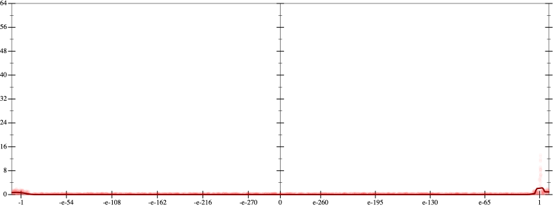
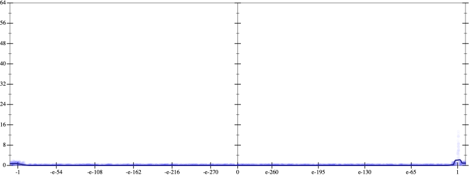
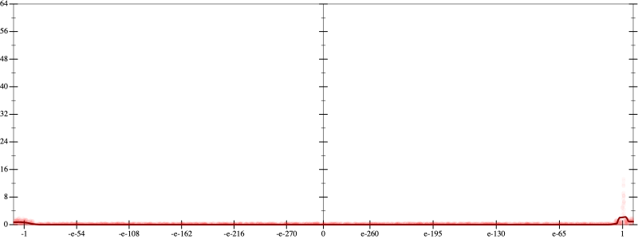
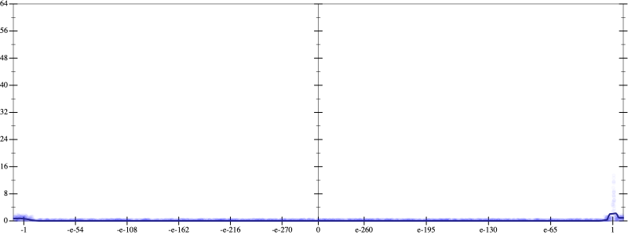
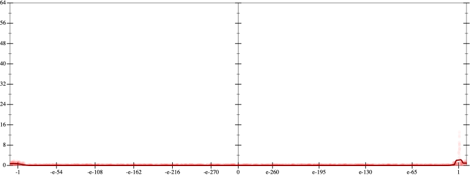
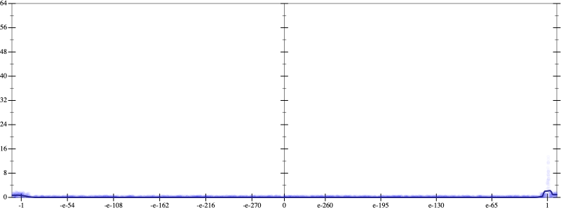

Error
 
Bits error versus x
Bits error versus x
Results
Initial program 0.1
Time bar (total: 52.8s)Debug log
herbie shell --seed 507954746
(FPCore (x)
:name "13"
:pre (and (>= x -100000000000.0) (<= x 100000000000.0))
(+ (+ (+ (+ (+ (+ (+ (+ (+ (+ (+ 1.0 (* -13.0 x)) (* 39.0 (* x x))) (* -47.666667 (* (* x x) x))) (* 29.791667 (* (* (* x x) x) x))) (* -10.725 (* (* (* (* x x) x) x) x))) (* 2.383333 (* (* (* (* (* x x) x) x) x) x))) (* -0.340476 (* (* (* (* (* (* x x) x) x) x) x) x))) (* 0.03192 (* (* (* (* (* (* (* x x) x) x) x) x) x) x))) (* -0.00197 (* (* (* (* (* (* (* (* x x) x) x) x) x) x) x) x))) (* 7.9e-05 (* (* (* (* (* (* (* (* (* x x) x) x) x) x) x) x) x) x))) (* -2e-06 (* (* (* (* (* (* (* (* (* (* x x) x) x) x) x) x) x) x) x) x))))